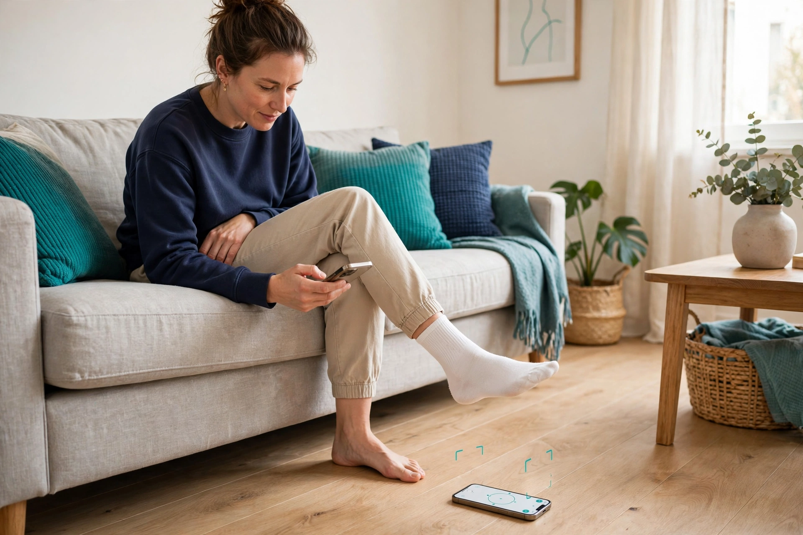
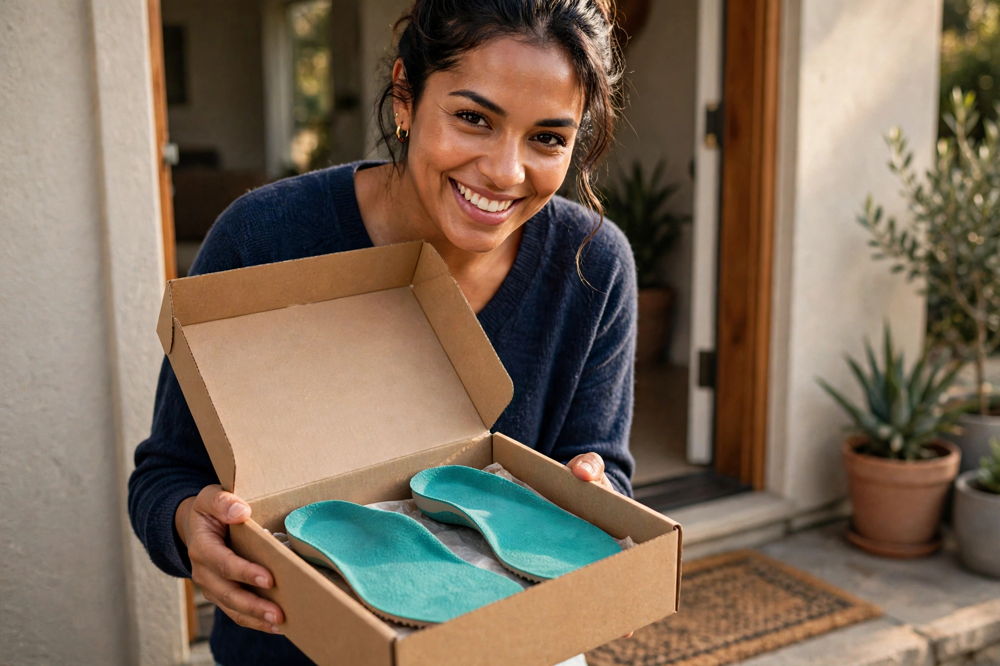
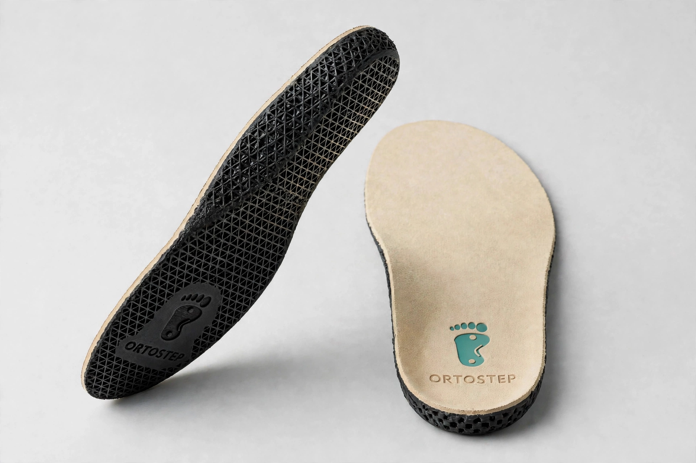
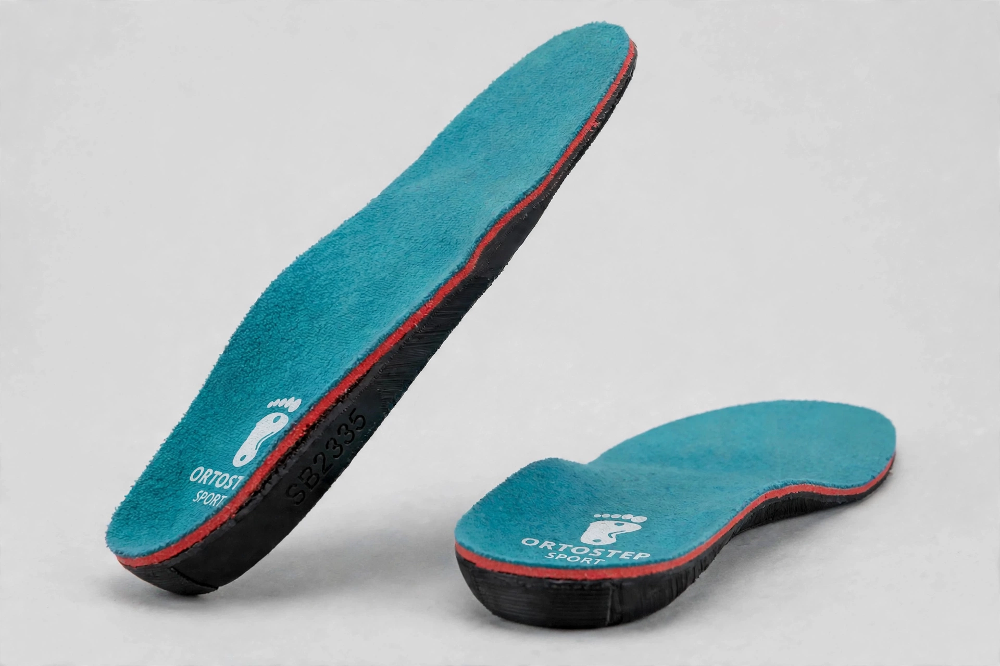
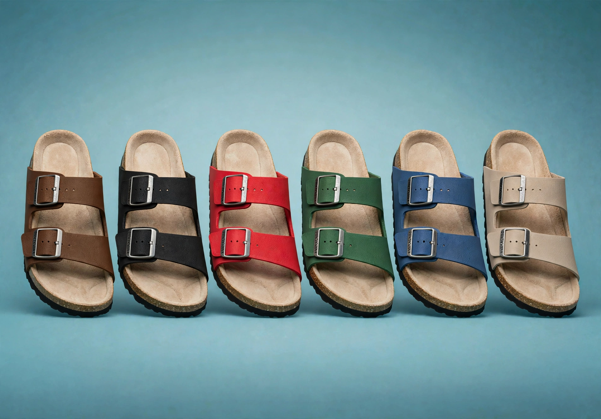
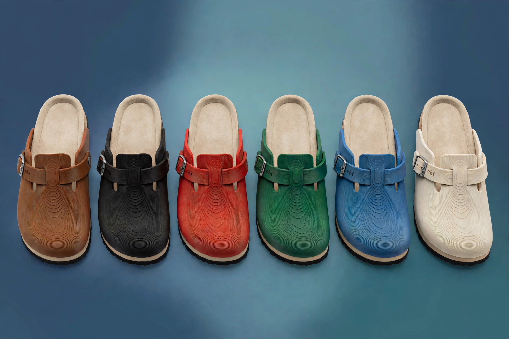
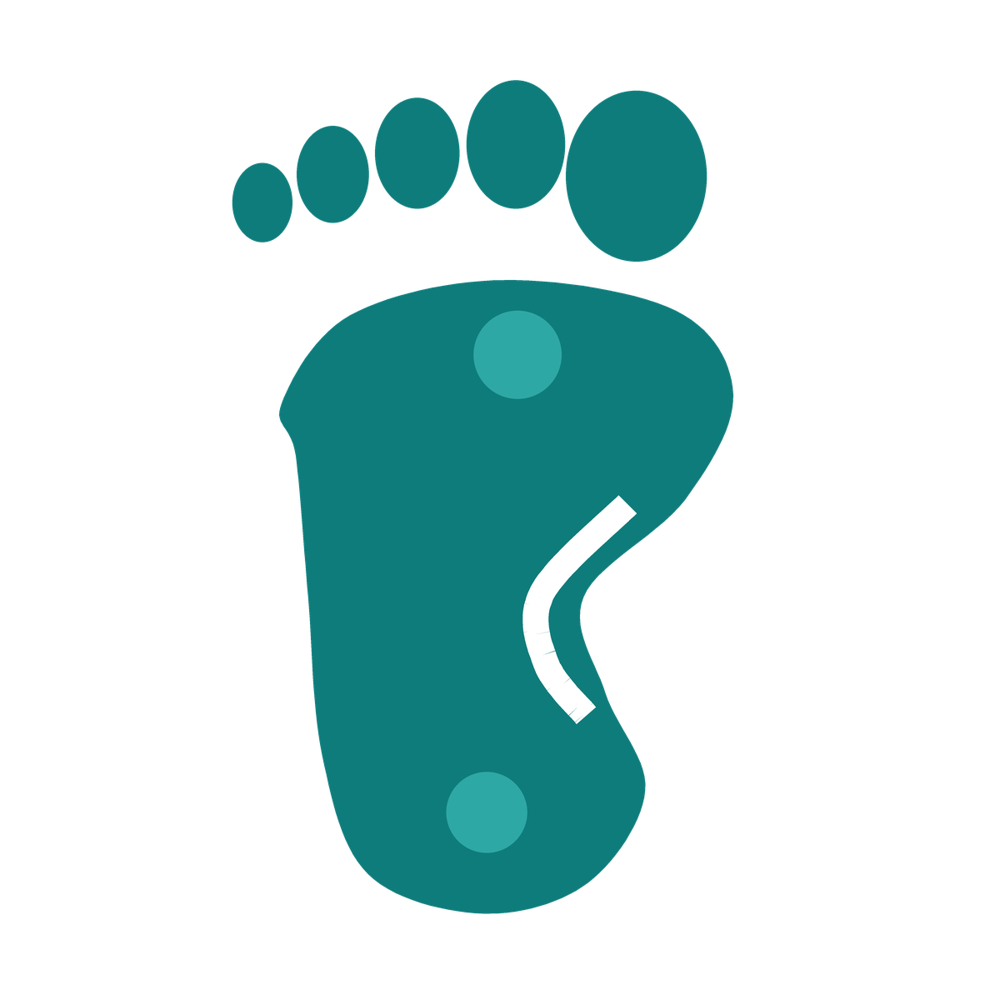

Te escaneas en casa
Con tu celular y una hoja blanca: una foto para medir cada pie, un video de cada pie, siete fotos guiadas y videos de cómo caminas. La página te guía y revisa cada captura al momento.
Te escaneas los pies con tu celular, un ortesista diseña tus plantillas con tu expediente completo y te las enviamos a tu puerta.
Hechas en México · Diseñadas por ortesistas
Cómo funciona
Sin moldes de yeso, sin citas y sin salir de casa. Tú capturas, nosotros diseñamos y fabricamos.

Con tu celular y una hoja blanca: una foto para medir cada pie, un video de cada pie, siete fotos guiadas y videos de cómo caminas. La página te guía y revisa cada captura al momento.
Revisa tu expediente completo (escaneo, fotos, marcha, dolor e historial de salud), no solo la forma de tu pie.

Impresas en 3D a tu medida y enviadas gratis a tu domicilio. Tu diseño queda guardado para ajustes y reimpresiones.
Productos
Dos plantillas y dos modelos de calzado. Todos siguen el mismo proceso: se diseñan desde tu expediente y se imprimen en 3D solo para ti.

$1,798 MXN · el par
Para tu día a día y tu calzado de diario: soporte y comodidad para caminar, trabajar y moverte sin pensar en tus pies.

$1,998 MXN · el par
Para correr y entrenar, con la amortiguación que tu actividad pide y el soporte que tu pisada necesita en cada zancada.

$2,798 MXN · el par
Tu plantilla personalizada en formato sandalia: impresa en 3D desde tu escaneo, con microfibra beige donde pisas y suela negra. El color de las correas lo eliges al comprar.

$2,858 MXN · el par
Modelo cerrado tipo Boston, con una correa y hebilla, y tu plantilla personalizada impresa en 3D: microfibra beige donde pisas y suela negra. El color del corte lo eliges al comprar.
Materiales: impresas en 3D en TPU flexible, con recubrimiento de microfibra que deja respirar tu pie. Precios en pesos mexicanos; el envío es gratis a todo México.
Tu expediente digital
No diseñamos solo con la forma de tu pie. Antes de producir, armas tu expediente completo y un ortesista lo revisa de principio a fin.
Una foto sobre una hoja blanca para medir el largo y el ancho de cada pie en milímetros, y una vuelta en video para ver su forma.
Vemos tu pie desde los ángulos que importan y el desgaste del calzado que más usas.
Cómo caminas dice mucho más que una foto: así ajustamos tu corrección.
Señalas en un dibujo de tu pie los puntos de dolor, su intensidad y desde cuándo. Nada se adivina.
Incluye diabetes y lesiones previas, para diseñar con tu historia clínica en mente.
Deporte o trabajo de pie: tu plantilla se diseña para lo que tus pies hacen todo el día.
Nos dices qué quieres lograr (correr sin dolor, aguantar tu turno, caminar más) y diseñamos hacia eso.
Nada entra a producción hasta que tu expediente está completo y un ortesista lo aprueba. Si falta algo o una captura no sirve, te escribimos para repetirla sin costo.
Beneficios
Cada par nace de tu expediente. Por eso sirven igual para entrenar, para trabajar y para cuidar tus pies.
Soporte y amortiguación ajustados a tu pisada y a tu marcha, para correr y entrenar con mejor base en cada zancada.
Ver la DeportivaSi tu jornada es sobre tus pies, tu plantilla reparte mejor la carga para que termines el día con menos cansancio.
Ver la ClásicaSi vives con diabetes, el ortesista ajusta materiales y presiones para proteger tu pie, y te damos un seguimiento más cercano.
Cómo lo atendemosTe acompañamos después de la entrega: te escribimos a los 7 y a los 30 días para saber cómo te sientes. Si algo no está bien en los primeros 30 días, ajustamos o reimprimimos tus plantillas. Ver condiciones de la garantía.
Preguntas frecuentes
No. Funciona con cualquier celular con cámara y un navegador actualizado (Chrome o Safari), sin instalar nada. Solo necesitas una hoja blanca tamaño carta o A4 y, de preferencia, a alguien que te ayude a grabar.
Una vez que tu expediente está completo y confirmado tu pago, diseñamos y fabricamos tus plantillas en unos 5 a 7 días hábiles; el envío a tu domicilio tarda de 2 a 5 días hábiles más. Te avisamos por WhatsApp en cada etapa.
La página revisa cada captura en cuanto la subes (duración, luz, nitidez, resolución, que se vean tus pies y tu cuerpo completo, y el tamaño de la hoja) y te avisa si conviene repetirla. Después, el ortesista revisa todo tu expediente; si algo no sirve, te pedimos repetirlo sin costo.
Tu diseño queda guardado. Durante los primeros 30 días ajustamos o reimprimimos tus plantillas según las condiciones de la garantía.
Sí. Si marcas diabetes en tu cuestionario, el ortesista usa materiales más suaves, reparte mejor las presiones en las zonas de riesgo y te da un seguimiento más cercano.
Importante: si tienes heridas abiertas, úlceras, cambios de color o pérdida importante de sensibilidad, primero consulta a tu médico. En esos casos una valoración presencial es indispensable, y te lo diremos si vemos señales en tu expediente.
Al confirmar tu pedido te escribimos por WhatsApp con tu folio y las opciones de pago. Tu plantilla entra a producción cuando el pago está confirmado.
Solo los usamos para diseñar, fabricar y dar seguimiento a tus plantillas. Se guardan en un sistema privado y no se comparten con fines comerciales. Consulta nuestro aviso de privacidad.

Escanea tus pies hoy desde tu celular y recibe tus plantillas personalizadas en tu puerta.
Hechas en México · Diseñadas por ortesistas · Garantía de 30 díasColor del corte
Tu avance se guarda en este celular. Si tienes que salir, vuelve a esta página desde el mismo navegador y continúa donde te quedaste.
Paso 1 · Tus datos
Con esto abrimos tu expediente y te avisamos de cada avance por WhatsApp.
Tu peso importa: nos ayuda a calibrar la firmeza de tu plantilla, para que el soporte sea firme donde debe serlo y suave donde tu pie lo pide.
Paso 2 · Tu escaneo
Necesitas una hoja blanca tamaño carta o A4 (detectamos sola cuál es) y, de preferencia, a alguien que te ayude. Primero una foto desde arriba para medir tu pie en milímetros; después una vuelta en video para que el ortesista vea su forma desde todos los ángulos.
Talón contra la pared, todo el pie dentro de la hoja y las 4 esquinas a la vista.
Talón contra la pared, todo el pie dentro de la hoja y las 4 esquinas a la vista.
Así se hace: mira el ejemplo
Pon la hoja en el piso, lejos de la pared, y apoya encima tu pie descalzo con tu peso normal.
Quien te ayuda sostiene el celular a la altura de la rodilla, apuntando al pie, y da una vuelta completa en 15 a 30 segundos. Tu pie no se mueve; la cámara da la vuelta. Que la hoja se vea siempre.
Haz lo mismo con el otro pie. Revisamos cada video en cuanto termina: si algo sale mal, lo repites aquí mismo.
Descalzo, sobre la hoja y con buena luz.
Descalzo, sobre la hoja y con buena luz.
Revisa que la talla sugerida coincida con la que usas. El ortesista confirma todo con tus fotos y videos.
Lo llenamos con tus fotos de medida. Si la medición no funcionó, mide con una regla desde la pared hasta tu dedo más largo.
Si no sabes, elige «No sé»: el ortesista lo mide en tu video y tus fotos laterales.
Con estas medidas y tu expediente se diseña tu Plantilla Clásica.
Paso 3 · Tus fotos
Cada foto tiene su guía. Tómalas con luz natural y sin filtros. Revisamos la luz, la nitidez y la resolución de cada una en cuanto la subes.
Así se hace: mira el ejemplo
Tip: pídele a alguien que te tome las fotos; es mucho más fácil que hacerlo tú solo.
Paso 4 · Tu marcha en video
Tres videos cortos. Pon tu celular fijo en un mueble a la altura de tu cadera, a 3 o 4 metros de donde caminas (o que alguien lo sostenga quieto). Que se vea todo tu cuerpo, de la cabeza a los pies. Si tu celular lo permite, graba en 60 fps. Revisamos cada video en cuanto lo subes.
De frente: camina hacia la cámara unos 10 pasos y regresa dándole la espalda, con tu calzado habitual y a tu paso normal. De 10 a 40 segundos.
Así se hace: mira el ejemplo
De perfil: con el celular en el mismo lugar, camina de un lado al otro frente a la cámara unos 6 a 8 pasos, da la vuelta y regresa. Que se vea todo tu cuerpo en todo momento. De 10 a 40 segundos.
Sentadilla en una sola pierna, de frente a la cámara y descalzo: toca la pared solo con una mano para equilibrarte, baja despacio sobre una pierna 3 veces y repite con la otra. Si pierdes el equilibrio no pasa nada: eso también nos dice mucho.
Así se hace: mira el ejemplo
Paso 5 · Mapa de dolor
Toca las zonas del dibujo (o los botones de abajo) donde sientes dolor. Por cada zona te preguntamos desde cuándo, cuánto duele y cuándo duele más.
Paso 6 · Cuestionario de salud
Marca todo lo que aplique. Esta información define tu corrección y tus materiales.
Paso 7 · Tu actividad y tu calzado
Tu plantilla se diseña para lo que tus pies hacen todo el día y para el calzado donde va a vivir.
Paso 8 · Tu objetivo y envío
Diseñamos hacia lo que quieres lograr. Cuéntanoslo como se lo contarías a tu ortesista.
El envío es gratis a todo México.
Al confirmar tu pedido te escribimos por WhatsApp para completar tu pago.
Consentimiento y aviso de privacidad. Tu escaneo, tus fotos, tus videos y tu información de salud son datos personales sensibles. Los usamos únicamente para diseñar, fabricar y dar seguimiento a tus plantillas, y no los compartimos con fines comerciales. Lee el aviso de privacidad y los términos y condiciones.
Subimos tu expediente completo (videos, fotos y respuestas) a nuestro sistema privado. No cierres esta página mientras se envía.
Estamos subiendo tus videos y fotos. Puede tardar unos minutos según tu conexión; no cierres esta página.
Tu pedido quedó registrado. Te escribiremos por WhatsApp para confirmar los detalles y el pago.
Tu expediente está completo en este celular. Para registrar tu pedido, envíanoslo por WhatsApp: